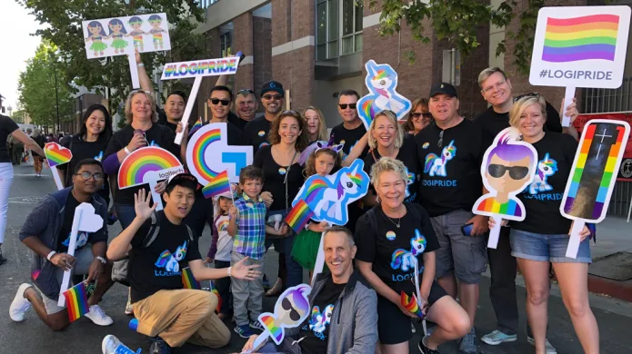

Innovative Solutions 회사 소개
로지텍 스토리
전 세계 거의 모든 국가에서 로지텍 제품이 판매되며 음악과 게이밍, 스트리밍, 비디오, 컴퓨팅을 통해 비즈니스의 번성을 지원하고 사람들을 하나로 만드는 제품을 설계합니다. 현재 로지텍의 브랜드에는 로지텍(Logitech), 로지텍 G(Logitech G), 아스트로 게이밍(ASTRO Gaming), 얼티밋이어(Ultimate Ears), 제이버드(Jaybird), 블루 마이크로폰(Blue Microphones) Streamlabs이 있습니다.
로지텍은 사람들이 삶 속에서 일상적으로 사용하는 제품과 경험을 디자인합니다. 컴퓨터를 이어주는 PC 주변기기를 선보여왔고, 현재는 음악, 게이밍, 비디오 등의 분야에서 다양한 제품을 선보이는 멀티브랜드 기업으로서 우리의 삶을 디지털 경험과 연결하고 있습니다. 40년 이상 제품 디자인과 글로벌 도달력 면에서 노하우를 확장해왔습니다. 고객이 디지털 세상과 연결하고 상호 작용하는 방법에 제품의 초점을 맞춥니다. 모든 제품과 모든 팀, 모든 분야에서 디자인을 중심에 두고 독특하고 의미 있는 경험을 창조합니다.
logitech 디자인 어워드
로지텍은 사람들이 디지털 세상과 어떻게 연결하고 상호 작용하는지에 초점을 맞춥니다. 디자인은 모든 팀과 모든 분야에서 로지텍이 행하는 모든 것의 중심이며 그 목적은 독특하고 의미 있는 제품 경험을 창조하는 것입니다.

밝은 미래를 디자인하는 과거 논리 부정을 통한 더 공평하고 기후에도 좋은 세계 창조
지구와 사회에 더 나은 미래를 만들려면 새로운 문제를 만들지 않고 큰 문제를 해결하는 색다른 접근법이 필요합니다. 로지텍이 더욱 지속 가능하고 공정하며 창의적인 세계를 위해 새로운 디자인 방식을 선도하는 방법을 확인해보세요. 여기에는 모두 각자의 역할이 있습니다.
기후를 위한 솔루션에 집중
순환을 생각하는 로지텍
포용적인 세상을 위해
사회 공헌
로지텍은 함께라면 큰 변화를 만들어 낼 수 있다고 믿습니다. 로지텍은 사람들이 더욱 성취감 있는 삶과 더 나은 세상을 설계하게 할 수 있습니다.
-
LOGICARES
로지텍은 우리가 살아가고 또 몸담고 있는 커뮤니티를 위해 헌신합니다. 받은 것을 돌려주고 변화를 주도하는 것은 사회적 책임일 뿐만 아니라 기업 문화의 핵심 요소입니다.
-

다양성 및 포용성
다양성과 포용성에 대한 로지텍의 헌신은 다양한 관점, 기술, 아이디어를 가진 사람들이 함께 모여 혁신을 주도하는 것을 가능하게 합니다. 로지텍은 다양한 문화, 배경뿐만 아니라 우리 모두에게서 탄생하는 위대한 아이디어의 가치를 소중하게 여깁니다.
-
재난 대응
로지텍은 어려운 상황에 처한 지역 커뮤니티를 지원합니다. 단체에 자금과 제품을 기부하고 더 큰 이니셔티브를 주도하기 위해 다른 사람들과 협력하는 것부터 개개인의 창의력과 선의에 기반한 활동에 이르는 다양한 선행을 해왔으며 앞으로도 지속해나갈 예정입니다.